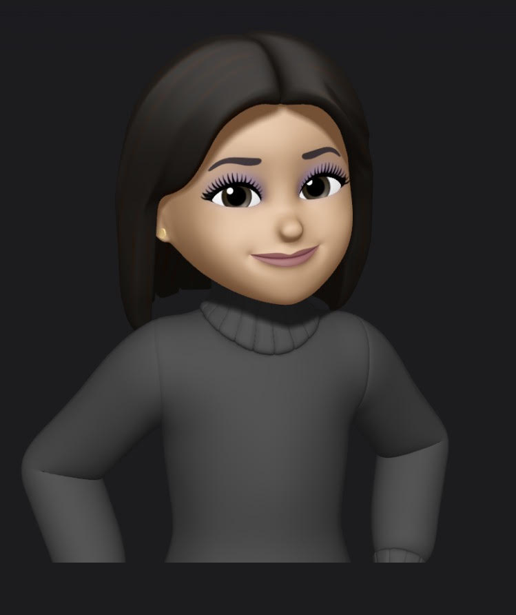

Computer Science Senior & Full Stack Developer
Passionate about creating innovative solutions and building amazing digital experiences.

I'm a Computer Science Senior at Pennsylvania Western University, California PA
(GPA: 3.72) Magna Cum Laude
I enjoy solving real-world problems through clean back-end logic, developing full-stack applications, and exploring fields like cybersecurity and networking. I believe great code starts with clear thinking and ends with intuitive user experiences.
When I'm not coding, I'm learning new tech and contributing to open source projects.
I'm currently seeking opportunities to work on meaningful projects with forward-thinking teams!